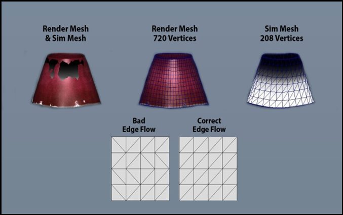
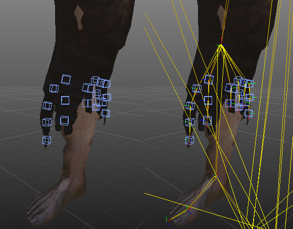
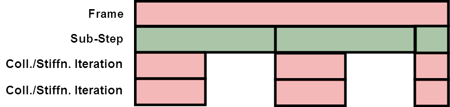

Обзор
VCloth 2.0 — это функция моделирования одежды в CRYENGINE. Используя VCloth, одежду вашего персонажа можно моделировать и анимировать автоматически в соответствии с его фактическим движением. Это может сделать его более реалистичным.
Моделирование ткани, как правило, является дорогостоящим процессом. Чтобы снизить влияние на производительность при сохранении визуальных деталей, CRYENGINE отделяет процесс моделирования от процесса рендеринга. Моделирование сетки низкого разрешения в сочетании со скиннингом сетки высокого разрешения, которое используется для рендеринга, позволяет добиться быстрого, но высококачественного и детального моделирования ткани.
Разделение сетки рендеринга и моделирования для моделирования ткани

Однородный поток по краям повышает правдоподобие.
Главы:
- Действительно ли моделирование ткани необходимо во всех случаях? Часто, когда мы думаем о ткани, это жесткий кусок ткани, который движется прямо в соответствии с движением тела персонажа, например, футболка. Обычно такие виды ткани не требуют полной имитации ткани, поскольку правдоподобного движения можно добиться путем снятия шкур.
- Анимация вашего персонажа какая-то странная/нереалистичная или в ней много пересечений?
Если да, то моделирование может быть не лучшим способом. Смоделированная ткань ведет себя так же, как и в реальности: если ваш персонаж нереалистично перемещается, перемещается в разные места или что-то подобное, чего не произошло бы в «реальном» мире, (физическая) ткань, вероятно, поведет себя неожиданно. - Что обычно работает довольно хорошо:
Ткань, которая раскачивается или сильно движется под действием анимации персонажа:- Накидки/Мантии
- Юбки
- Куртки
- Мягкие крепления, например. Косички, Волосы
- Что обычно работает не очень хорошо:
Жесткая ткань, едва раскачивающаяся:- Футболки
- Брюки
- Плотно прилегающая ткань
Лучшие практики
В целом моделирование ткани — дорогостоящая задача. Поэтому вам следует принять во внимание некоторые из следующих замечаний, прежде чем разрабатывать одежду вашего персонажа, чтобы улучшить производительность во время игры, визуальное поведение, а также управляемость вашей одежды. Внутриигровые симуляции, такие как ткань, всегда передают определенный вид контроля от аниматора к среде симуляции, что в некоторых обстоятельствах может привести к нежелательному поведению. Поэтому прежде чем создавать персонажа и его одежду, продумайте следующие замечания:
Имитация конца порванных брюк

В этом случае со всех брюк снята кожа, только конец моделируется/анимируется с помощью нескольких симуляций маятника.
Чтобы улучшить производительность и стабильность, иногда может быть полезно использовать комбинацию оболочки и ткани. Например, если вам нужно, чтобы конец брюк раскачивался вперед и назад, вы можете снять шкуру с большей части брюк и смоделировать только концы. Если область моделирования небольшая, вы можете даже рассмотреть возможность использования вложений PRow CRYENGINE или просто шарнирных насадок с симуляцией маятника, что показано на следующем изображении:
Использование
Моделирование ткани — основные силы
Чтобы эффективно настроить ткань, решающее значение имеют базовые знания принципов моделирования ткани. Одной из важных концепций ткани в компьютерной графике является использование сил растяжения, сдвига и изгиба. Применяя эти три силы в сочетании с различными силами, можно смоделировать правдоподобную ткань и различные виды текстиля.
- Силы растяжения позволяют сохранить размер куска ткани.
- Силы сдвига уменьшают сдвиг ткани.
- Силы изгиба уменьшаются морщины и складки и придают ткани определенную жесткость
Силы растяжения, сдвига и изгиба

Шаг по времени
Чтобы обеспечить хорошую производительность вашей ткани, важна еще одна простая концепция: пошаговое моделирование. Между двумя визуализированными кадрами может быть несколько физических подэтапов, распространяющих ткань во времени. Размер подшага задается параметром Временной шаг. Например, если ваша игра работает на частоте 20 FPS, каждому кадру требуется 1/20 с = 0,05 с; с шагом по времени 0,01 с будет 5 подшагов на кадр.
Кроме того, для каждого подэтапа вы можете определить количество Итерации жесткости столкновений - например, если вы установите 3 итерации на подшаг, в вышеупомянутом примере с 20 FPS будет 3 итерации * 5 подэтапов = 15 итераций на кадр.
Это упоминается здесь, чтобы указать на то, что низкие значения для Итерации жесткости столкновений имеют решающее значение, поскольку количество выполнений на кадр может сильно увеличиваться в зависимости от частоты кадров, что увеличивает затраты на симуляцию ткани. С другой стороны, чем выше количество Итерации жесткости столкновений, тем жестче может быть ваша ткань - так что, в конце концов, все - это компромисс между производительностью и эластичностью/жесткостью.
В каждом кадре выполняется несколько подэтапов, при этом каждый подэтап содержит несколько итераций коллизий/жесткости.

Похожие страницы
Для получения дополнительной информации о том, как использовать VCloth, посетите следующие страницы:
Как экспортировать VCloth из Maya в CRYENGINE
Обязательно загрузите уровень, иначе вложение VCloth может отображаться неправильно.